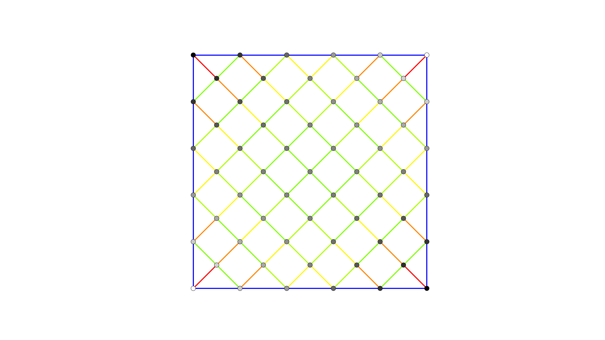

Compute equilibrium

import os
from compas.utilities import Colormap
from compas_fofin.datastructures import Cablenet
from compas_fofin.fofin import update_xyz_numpy
from compas_plotters import MeshPlotter
# ==============================================================================
# Create a cablenet
# ==============================================================================
HERE = os.path.dirname(__file__)
FILE_I = os.path.join(HERE, 'lines.json')
FILE_O = os.path.join(HERE, 'hypar.json')
FILE_P = os.path.join(HERE, 'hypar.png')
cablenet = Cablenet.from_json(FILE_I)
cablenet.attributes['density'] = 0.0
# ==============================================================================
# Identify anchors
# ==============================================================================
cablenet.vertices_attribute('is_anchor', True, keys=list(cablenet.vertices_on_boundary()))
# ==============================================================================
# Compute equilibrium
# ==============================================================================
update_xyz_numpy(cablenet)
# ==============================================================================
# Visualize
# ==============================================================================
heights = cablenet.vertices_attribute('z')
cmap = Colormap(heights, 'black')
vertexcolor = {key: cmap(z) for key, z in zip(cablenet.vertices(), heights)}
forces = cablenet.edges_attribute('f')
cmap = Colormap(forces, 'rgb')
edgecolor = {key: cmap(f) for key, f in zip(cablenet.edges(), forces)}
plotter = MeshPlotter(cablenet, figsize=(16, 9))
plotter.draw_vertices(facecolor=vertexcolor, radius=0.05)
plotter.draw_edges(width=2.0, color=edgecolor)
plotter.save(FILE_P, dpi=150)
# plotter.show()
# ==============================================================================
# Export
# ==============================================================================
cablenet.to_json(FILE_O)